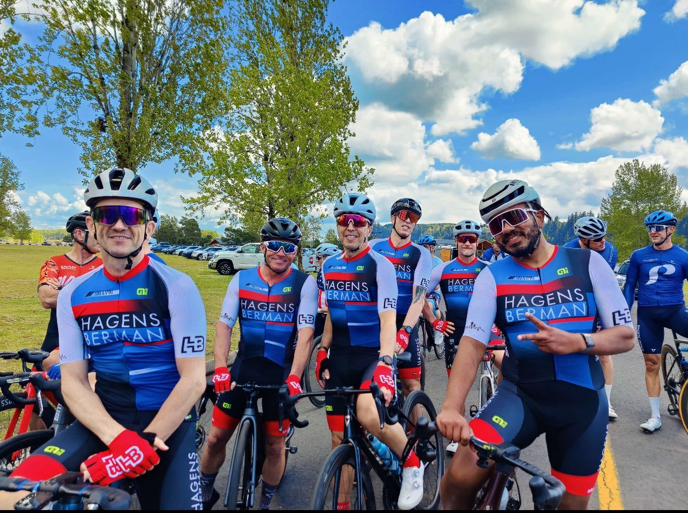
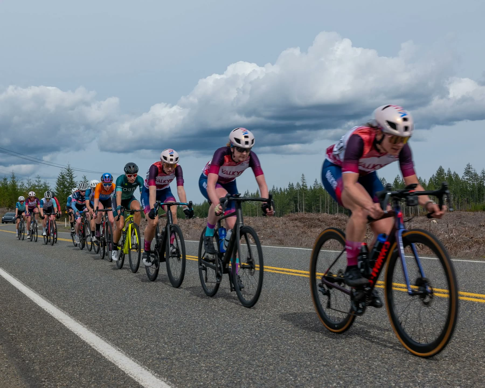
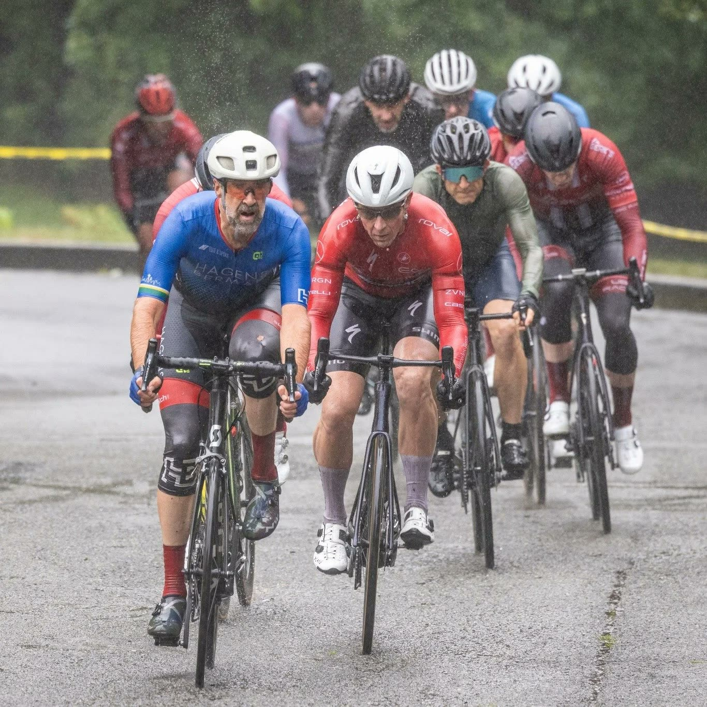
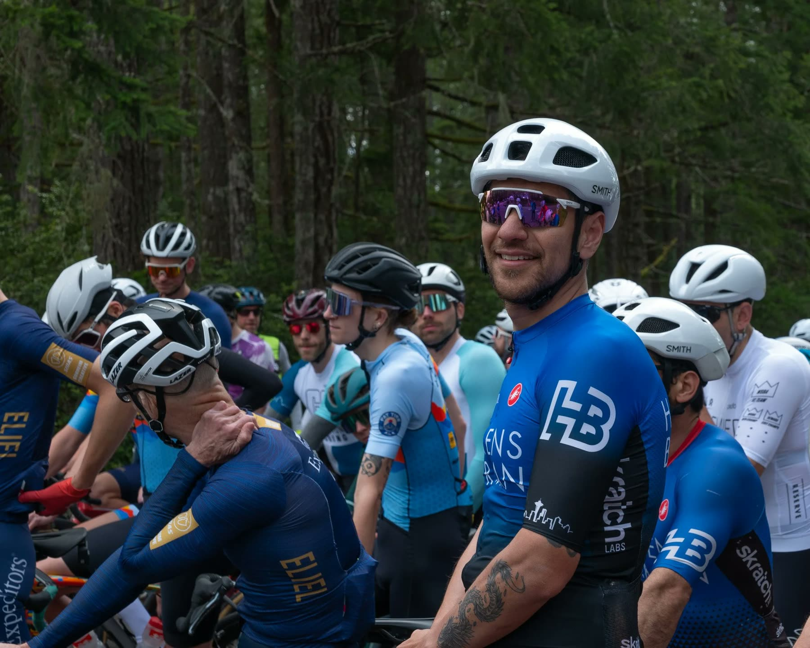

Hosted by HB Racing
Mason Lake Road Race
Mar 21–28,2026
The PNW Spring Classics return — a rolling 12-mile loop around scenic Mason Lake. Start/finish at Grapeview, WA.
A Seattle area competitive cycling team
Hagens Berman Racing Seattle is an amateur cycling race team competing in road, gravel, cyclocross, track, and mountain bike races throughout the Pacific Northwest.
Twenty-plus seasons in. Alumni in the pro ranks. Still lining up every weekend — because racing is what we do together.
Hagens Berman Racing Seattle is an amateur cycling race team competing in road, gravel, cyclocross, track, and mountain bike races throughout the Pacific Northwest. Our team has been established for over 20 years, and our alumni include riders who have gone on to race professionally.
We seek to develop riders of all ages and abilities to race successfully while maintaining healthy balance with other aspects of life.

One team, five ways to suffer beautifully. Wherever you point a bike, there’s a teammate beside you.
Circuit & road races — the heart of the calendar.
Forest service roads, big days out.
Autumn mud, barriers and cowbells.
Velodrome nights, fixed gear, full gas.
Singletrack in our own backyard.
“Racing happens as a community,
not as an individual.”
We don’t only race hard — we give our time back. Hagens Berman hosts two road races each March, and our members regularly volunteer at other events throughout the year.
We foster a welcoming, enthusiastic, and inclusive culture within the team — an attitude that we bring to races.
Hosted by HB Racing
Mar 21–28,2026
The PNW Spring Classics return — a rolling 12-mile loop around scenic Mason Lake. Start/finish at Grapeview, WA.
We strive to win and have fun while fueling the development of riders and of cycling in the local community — and we back it up with real in-race support.
We race as a team,
not as a group of individuals wearing the same kit.



The gallery lives on Instagram
@hagensbermancycling
First race or upgrade points —
there’s a place for you here.
Men’s / women’s / masters / development squads — $75 annual dues, all five disciplines.